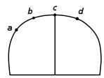

Беседа 3133 от 3877 · Беинса Дуно
Музикална задача
5 ч сутринта
(Времето мъгливо. Небето леко покрито.)
„Отче наш“
„Давай, давай“
„Духът Божи“
Има някои работи, които трябва да се повтарят. Казват: „Повторението е майка на знанието.“ Повторението е майка и на невежеството. Та, желателно е много работи да не се повтарят. Навсякъде, във всички общества настава едно обезличаване. Най-първо хората се интересуват много. Докато човек е млад, има идеал, взема участие в живота. Като почне да остарява, почва да мисли за другия свят. Той мисли за другия свят, но е недоволен. Някой път старите са недоволни от младите. Не че са недоволни от слабостта на младите, но понеже те не могат да участвуват в живота на младите, стават недоволни. Животът на младите е естествен.
Има три пътища, три пътища, по които човек върви – три училища. Физическият път е път на физическото тяло, за клетките, за желанията на Земята. Те са естествени. Някой път ние се нахвърляме на светския живот. Това трябва да оставим. Най-първо майката казва на детето си: „Ти няма да дружиш с това дете, с онова дете.“ А пък после го праща на училище и му казва: „Ще дружиш с всички деца в училището.“ Вторият път е път на човешкото сърце. Човек трябва да избере този път, за да може да се развива човешкото сърце. Третият път е път на човешкия ум. И той си има пътища. Всеки път си има своите упражнения. И Христос казва: „Аз съм Пътят, Истината и Животът.“ Как бихте превели тези думи? Какво място ще дадете на „пътя“? В даден случай той произтича от мъдростта. Христос казва: „Новият път е път на Божествената мъдрост.“ Той казва: „Аз съм Пътят“. Пътят, но който вярва; и вие трябва да тръгнете по него. Във втората част Христос казва: „Аз съм Истината“. То е зенитът. Началото е пътят. Знанието, светлината са пътят. Сега, знанието не е само от един свят. Някои хора са учили за физическия свят само. В човешкото тяло областта при веждите, долната област на челото, е физическият свят. Средната част на челото е духовният свят. А горната му част е Божественият свят. Умът в долната област отговаря на физическия свят; умът в средната област отговаря на духовния свят; и умът на горната област отговаря на Божествения свят. Човек има и три вида чувства: чувства на физическия свят, духовния свят и Божествения свят.

Физическият свят има физическа материя и физически сили, които трябва да се изучават. И духовният свят си има духовна материя, духовни сили, които трябва да се изучават. И Божественият свят си има Божествена материя и Божествени сили, които трябва да се изучават. Индусите я наричат „акаша“. А пък българите имат думата „каша“. Значи, нещо забъркано и не се знае какво е. По някой път вие се намирате в едно противоречие, заболява кракът ви. Вие не разбирате законите на физическата материя. Някой път вие искате да лекувате някой човек, но не знаете как да го лекувате. Има си начин за лекуване. Хората ще му турят компреси, ще му направят разтривки с масло, спирт, ще му наложат тесто с вощина, с трици и пр. Но всичките болести произтичат от това, че човек изгубва физическата топлина на тялото си. Тогава болестите идват. Болестите произтичат от 3 причини. Има болести, които произтичат от постъпките на хората във физическия свят; има болести, които произтичат от чувствения свят; има болести, които произтичат от мислите на човека. Всички нервни разстройства, които имат хората, се дължат на това, че мислите не са в хармония. Не искам да ви занимавам с болезнени работи. Но понеже сте доста напреднали, вие сте като затворени езера. И нямате излаз. Ходите, ходите, искате да направите нещо. Тази насъбрана енергия във вас трябва да излезе навън.
Най-първо са проповядвали на хората, че трябва да се пазите от света. Няма какво да се пазите от света. Ако е за пазене, светът трябва да се пази от вас, а не ние от света. А сега казват обратното. Не, светът трябва да се пази от нас. Казват: „Пазете се от дявола.“ Не, дяволът трябва да се пази от нас! Щом ти трябва да се пазиш от дявола, ти си страхлив. А пък щом дяволът трябва да се пази от тебе, той е слаб. Щом ти трябва да се пазиш от него, той е по-силен от тебе. А щом той се пази от тебе, той е по-слаб от тебе. Ние сме по-силни от дявола. Това го имайте предвид! Само че дяволът някъде е по-майстор: той е майстор в лъжите. Като дойде, образува един долап, както паяка, който хваща някоя муха. Но с хитрина, не със сила. Сега не искам да ви говоря много за дявола, защото не трябва да обиждаме. Той знаете ли колко главоболие има! Той е забъркал една каша, та се чуди какво да направи. Той счита, че всички хора са виновни. И ви казва: „Вие сте виновни за всичката каша, която забъркахте.“ Той търси да си помогне на себе си. Той не е прав. Сам се е забъркал той в една каша и търси сега причината отвън.
Да оставим сега дявола. Той си върши много добре работата. Аз му харесвам една черта: много е прилежен, няма същество по-прилежно от него. Ако го изпъдиш от вратата, той влиза през комина. Ако го изпъдиш от комина, той ще влезе през някоя малка дупчица. Сто пъти да го изпъдиш, пак ще дойде. Ще каже: „Добър ден, как сте?“ Той е много учтив. И е много слаб. Много ще те хвали. Всеки, който много хвали, е много малък. Ще те запали от четиритях страни. Че ще гориш. Той има да взема нещо от тебе. Той, като дойде, ще каже: „Ти си гениален. Като тебе същество няма в света. Не съм виждал като тебе.“ И след като си свърши своята работа, да каже: „По-голям серсемин от тебе не съм виждал.“ Ще те накара някой път да направиш нещо и ще ти каже: „Няма нищо, помъчи се. Направи на хората някоя църква, оттук-оттам вземи, събери този-онзи и направи църквата. Че си обрал, няма нищо – ще направиш църква! Ще станат хората по-добри.“ А пък щом направиш църква, той ще вдигне адвокати, съдии да те хванат и да те турят натясно. След това ще те озлоби и ще каже: „Не разбират хората каквото правиш.“ Това са негови прийоми. Дяволът, като направи погрешка, счита, че е направил добро. И като направи добро, счита, че е направил погрешка. И когато похвали някого, той после казва: „За тези похвали аз ще му натрия носа.“ И за да си изкупи греха, той ще ти натрие носа. И той ще мисли, че е направил най-голямото добро. То са негови разбирания. Да не му кажете сега това.
Та казвам: Вие трябва да развивате в себе си физическите сили. Човек до стари години има какво да развива в тялото си. И ако вие бихте следвали законите на природата, човек би живял много естествено. Сега крайният предел е 120 години. Има 12 зодии. Значи във всяка зодия по 10 години, те са 120 години. Но човек не може да направи един кръг. Но живеят някои само един месец, някои една година, 10, 20, 30, 50, 60, 70, 80. На 80 години почват да мислят, че са остарели и казват, че трябва да вървят за другия свят; нямат с какво да се занимават повече на физическото поле.
Та казвам: Трябва да имате винаги с какво да се занимавате. На първо място, турете силите на тялото си в естествено положение. На второ място не губете силите на сърцето си, не губете усета. Най-малката печалба, която добиете, да те радва. После, не губете вашите хубави мисли. Като ви дойде една хубава мисъл, радвайте се на нея. Като почувствуваш малко повече сила или имаш приятно чувство, или някоя хубава мисъл, да се радваш. Да се радваш на своите мисли, чувства и постъпки. Защото, като влезете в другия свят, мислите, чувствата и постъпките ви вървят с вас. Вие в другия свят ще видите, че физическият свят ще се затвори за вас, но вие ще имате само картини на физическия свят. Реалният свят ще се затвори, но ще имате картини за физическия свят.
Сега някой път вие се смущавате, като че нямате какво да правите на Земята. Например един актьор може да изпълнява много работи, може да се мълви за много работи. Но един слушател, който отива на театър, ще вземе билет, ще седне и ще гледа как актьорът си играе ролята. Или дават опера. Операта е светът. То е нещо подобно. То е за света. Света аз наричам хора […]. И то е за възпитание. Искат да представят живота в операта или в драмата. Представят живота, в действителност както не е в живота. Публиката като гледа, представлението действува възпитателно. Религиозните хора, които не разбират широкия план, който има Бог, мислят, че всичко, което се върши в света, е грешно. Грехът го има навсякъде. И в света, и у духовните хора, и между ангелите. То е нещо индивидуално. Всеки може да направи една погрешка. И да се радвате, че можете да направите една погрешка. Това показва, че сте свободни. Като пееш, можеш да направиш погрешка. Можеш да вземеш един тон с половин тон погрешно. Като се качваш, може да вземеш погрешно; и като слизаш. Но това не значи нищо. Една погрешка не е погрешка. Тя е само един контраст. Всяка погрешка е само един стимул, за да разбираш работите по-добре.
Та казвам: Между всинца ви да се образува една вътрешна връзка на взаимно почитане и уважение. Всеки един от вас трябва да уважава другите, да уважава в другите това, което Бог им е дал. В живота зачитайте тялото на един човек, което Бог му е дал; зачитайте сърцето, което Бог му е дал; зачитайте неговия ум. В новата култура трябва да се зачитат хората. И не се месете много да изправяте хората. Това не е право. Ако е за изправяне, изправяйте най-първо себе си. Колко неща има да се изправят. Вие наблюдавали ли сте? Да допуснем, че вие сте един касиер в някоя банка. През вас са минали днес 100–200 души. Колко пъти можете да изгубите своето равновесие. Или сте в пощата и продаваш марки. Или сте бакалин и раздаваш захар. Колко пъти можете да изгубите равновесието. Или може да си адвокат, учител, майка. Като майка колко пъти ще изгубиш своето равновесие! Детето ни най-малко не влиза в твоето положение. То изисква, настоява. Десет пъти може да плаче, ще те вдигне. Никак не гледа, че ти може да си уморен. Религиозните и духовните хора са по-чувствителни и в тях страданията са по-интензивни. Та, чувствителността трябва да върви съразмерно; човек не трябва да развива много своята чувствителност. Щом се е развила много чувствителността, той трябва да знае как да пази своето сърце Много страдания идат от прекомерната чувствителност. Например някой не те е погледнал добре. И ти казваш, че той е станал студен.
Но да се повърнем към въпроса: топъл и студен. Хладината е приятна, но и студът си има своята служба. Но много болести се дължат на студа. Може да направите един опит. Да кажем, че вие сте се простудили, изгубили сте температурата на вашето тяло И след това се свивате. Тогава ви турят топли компреси, разтриват ви и като ви турят топли компреси, вас ви е приятно. Каква е философията на тая приятност? Когато имате едно възпаление отвън, отвън е топло, но ако вътре е студено? В пространството между молекулите на тялото вътре съществува студ. И следователно, когато се туря топлината, за да проникне в това пространство, то е, за да възстанови тая топлина, която тялото има. И щом се запълни това пространство с топлина, вас компресът вече ви е приятен. Щом се стопят всички ледове и се превърнат на вода, казвате: „Не искам вече компрес. Стига.“ Ако повишавате, ще стане обратно. Та, по някой път чувствата на човека могат да се заледят. Тогава усещате една голяма неприятност. Тогава трябва да турите топлина.
Когато говорим за любовта, трябва да знаем, че чрез закона на Любовта, чрез закона на Обичта ние влагаме нормална топлина, която тялото изисква. Ти трябва да обичаш, защото иначе ще изгубиш своята топлина. А пък щом изгубиш топлината на духовното си тяло, ти не можеш да имаш добро разположение на сърцето И умът си има своята топлина. Докато умът има тази светлина, която трябва да има, той има и нормална топлина. Щом светлината се намали, ще се намали и топлината му. Всяка мисъл, която е права, тя носи светлина; всяко чувство, което е право, носи топлина вътрешна. Тази топлина я наричат „мир“, „радост“, какво ли не. Но казвам, че то е топлина. Аз вземам думата „топлина“, понеже тази дума е понятна. Ето какво значат понятните думи. Ако вие влезете в един театър и кажете: „Любов“, ще кажат, че на този му е мръднала дъската. Но ако кажете: „Пожар!“, тогава всички разбират какво значи тази дума. Думата „пожар“ е мощна сила. Та, ние нямаме за любовта дума, силна като думата „пожар“. Като ви кажат „любов“, вие казвате: „Празна работа е любовта, тя е играчка.“ Но ако кажеш някому „страдания, мъчение“, онзи почва да трепери. Като кажат „мъчение“, ти разбираш тая дума.
Страданието е само сянка на любовта, само сянка на тази топлина. Защо страдате? Страдате да не изгубите топлината на вашето духовно тяло Всяко едно страдание възстановява вътрешната топлина. Без страдание хората щяха да изстинат, щяха да замръзнат, щяха да се вкочанят. Искате да не страдате. За да не страдаш, трябва да излезеш от физическия свят. А пък да отидете на онзи свят не сте готови. Там няма да ви приемат в училището. И за слуги няма да ви приемат. Могат да ви приемат за слуги. Във Варненско една сестра, 60-годишна, сънувала, че отива в другия свят. Тя не знаела да чете. На една маса седели 24 старци, облечени в бели дрехи. На масата имало книги. И те пишели. Тя казала: „Какво правите тук?“ Тя искала да знае те какво правят. Те ѝ казали: „Бабо, знаеш ли да четеш?“ – „Не зная.“ „Тогава тук вода ще носиш.“ Значи, вода ще носи, от А, Б ще почне. „Няма да се месиш в тази работа, която ние правим, но ще учиш А, Б.“
Физическият, духовният и умственият светове са свързани. В новата култура ще има едно равновесие. Сега духовният човек трябва да стане по-сериозен. Сериозността не зависи от неговите мускули. Но духовният свят трябва да привлича ума му. Той да вижда красотата на духовния свят. И физическият свят си има своя красота. И Божественият свят си има своя красота.
Тези три свята съставляват една целокупност. Ако ти нямаш красотата на физическото тяло, ще липсва нещо на духовното ти тяло. Ако нямаш красота на духовното ти тяло, ще липсва нещо на умственото ти тяло. Здравето трябва да бъде в тялото, чувствата и мисълта. И тогаз казваме: светли мисли, топли чувства и силни постъпки. Тези неща ще ви са потребни.
Искате да живеете. Какво значи това? С колкото повече хора, с душите на хората, влезете във връзка и се запознаете, толкоз по-добре. Ако не влезете във връзка с човешките умове, не може да имате добро разположение. Ако не влезете във връзка с човешките сърца, също не може да имате добро разположение. Също така, ако не влезете във връзка с човешките тела. Ще забележите, че щом се доближавате до известни хора, вие ги обичате, понеже от техните тела излиза топлина и тези хора ви са приятни. А пък някои хора са много бедни. Те отиват да помагат на другите хора, а пък те сами са бедни.
Човек, който иска да помага на Бога, на другите, трябва да бъде богат и по тяло, и по сърце, и по ум! А пък който не е богат, той трябва да работи, за да забогатее. Писанието казва: „Събирайте си съкровища.“
Чрез физическото си тяло ще влезем в съобщение с хората на Земята. Трябва да влезем в съобщение с тях. А пък с духовното тяло ще влезем във връзка с душите им – значи чрез нашето сърце Ако нашето сърце не е развито, няма да можем да влезем в общение с душите на хората. А пък ако умът ни не е в съответното състояние, няма да може да влезем във връзка с духовете на хората. Под „духове“ разбирам най-високото положение, чистите, напреднали души, съвършените души. Под „дух“ аз разбирам една душа, която е завършила своето развитие, а пък под „душа“ разбирам душа, която служи на човечеството. Под „дух“ разбирам душа, която чертае бъдещето на хората. Духът е, който чертае бъдещето. А пък душата е, която реализира това, което духът чертае. А пък умът и сърцето са, които прилагат вече това, което е вече начертано.
Като говорим за музика, трябва да знаем, че има различни методи. Вие, старите сестри, пеете ли? Младите да пеят. Има някое време, когато хората не могат да пеят, например, когато ядат или когато спят. Когато обвинили едного, че е голям пияница, един казал: „Грешка имате, аз го зная, че е трезвен човек: когато спи никак не пие.“ Сега, те са основни неща, които трябва да ги вземете предвид. Те са за сегашното ви възпитание.
Трябва да работите. Има други неща, които постепенно ще ви се разкрият. На всекиго един от вас, според степента на развитието му, ако е готов, ще му се разкрива. Те са вътрешни, духовни придобивки, които са специално само за вас. Всяка ваша придобивка ще я държите. Не ходете да се хвалите с нея, понеже могат да ви я откраднат. Ти си видял нещо в духовния свят и ходиш да разправяш, а онзи казва: „Ти каквото си видял, такива работи няма.“ Не разправяйте. Ти мислиш, че целият свят знае тези работи.
Песента „Фир-Фюр-Фен“ е песен за ума. „Махар Бену“ е песен за сърцето, а пък „Давай, давай“ е за тялото И строежът им е особен. Има особен строеж на песните. Във „Фир-Фюр-Фен“ имате прима, после има кварта. После нагоре отива секунда. После пак секунда и терца. Какво означава в музиката една терца? Терцата дава една мекота на един тон. Терцата върви по женска линия; квартата върви по мъжка линия. Тя е мощна. Когато някой е болен, дава се кварта. После имате квинти. Квинти и терци си приличат. Терцата дава секста. Секундата дава септима, ако се издигне.
Философията на музиката е много трудна работа. Защото да пееш, не само трябва да събудиш твоя музикален център тук, на челото, но трябва да събудиш и ред чувства, които са свързани с музиката. Ако чувствата ти не вземат участие, ти не можеш да пееш. И ако събудиш тия чувства отгоре и пееш правилно, веднага ще почувствуваш една малка топлина под лъжичката, едно разположение и ставаш весел. „Фир-Фюр-Фен“ започва с ре. Но ако можахте да пеете с по-висок глас, ако можехте да приемате две и половина октави, аз бих ви препоръчал да почвате тая песен със сол. Тук почва с ре. Ако е басист някой, може да пее от долно сол. Друг може да пее от средно сол. А някои от вас може да изпеят от горно сол. (Изпя се тази песен, като се почна от средно „сол“; втори път се почна, като се почна от долно „сол“; след това се изпя, [както] е нотирана, от „ре“.) Ре е движение.
Когато ставате сутринта, правете си едно музикално упражнение. Пригответе си за сутринта един музикален репертоар, ваш. Вземете си една дума. И по нея си съчинете една мелодия. Тези песни са модели, по които трябва да си композирате песни. Всяка песен си има своето време. Понеже всички не можете да бъдете цигулари, китаристи, органисти, пианисти и флейтисти, то поне всички може да пеете. И грехота е, ако не пеете. На всеки човек Бог е дал глас. И като не пее, грехота е. Органът на гласа, ларинксът, е най-хубавият инструмент, който човек има. А пък цигулката знаете ли колко е своенравна? Някой път скрибуца, че и тон не може да издава. (Учителят свири на цигулката и пее: „сила, усет, мисъл“ и всички с него изпяха тия думи с разнообразни извивки.)
Вие не можете да бъдете големи артисти на сцената, но ще се учите да пеете. И като изпеете нещо, втори път по-хубаво ще пееш. В думата „сила“ ла е хубава сричка, понеже изразява Божествени енергии, с които си натоварен. А означава товар. Имаш товар, но Божествен товар – една идея, която е Божествена, та тебе ти е приятно да носиш тези несгоди на живота.
Или може да изпеете: „път, истина, живот!“ (Учителят изпя няколко пъти тези думи.) Запомнихте ли мелодията? Може да се нотира.
„Добрата молитва“
6.15 ч сутринта
(На поляната направихме упражненията.)
ХIХ година (1939–1940)
13-а школна лекция на Общия окултен клас,
държана от Учителя на 27 декември 1939 г.,
София – Изгрев.